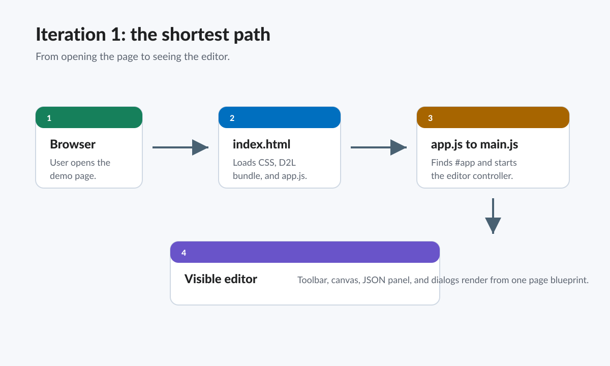
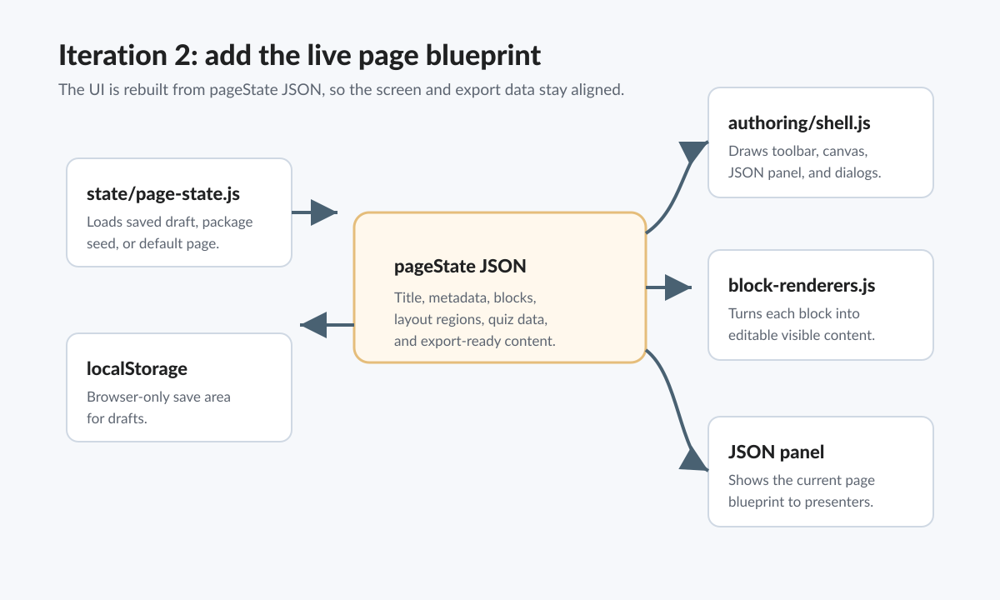
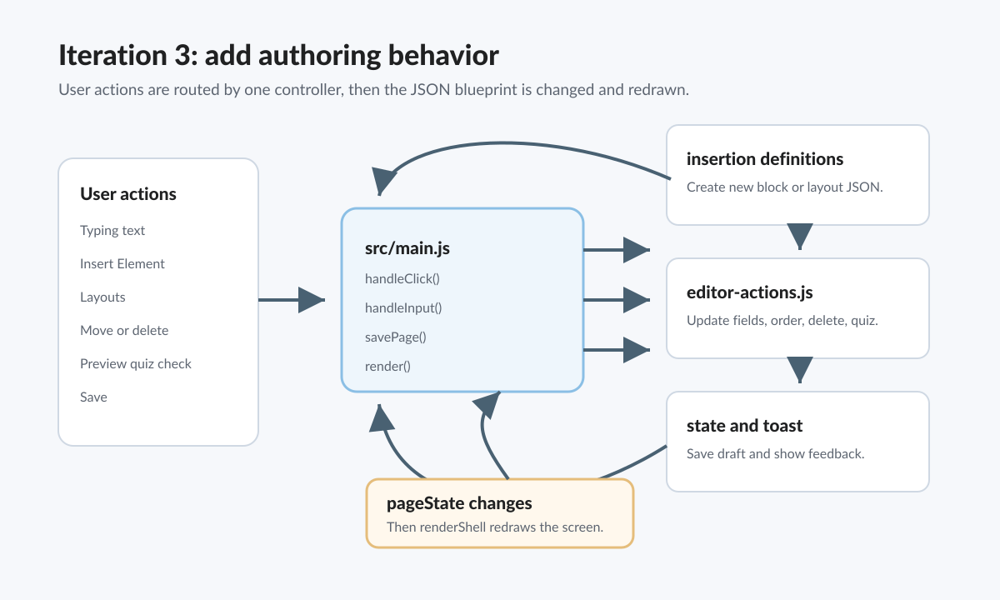
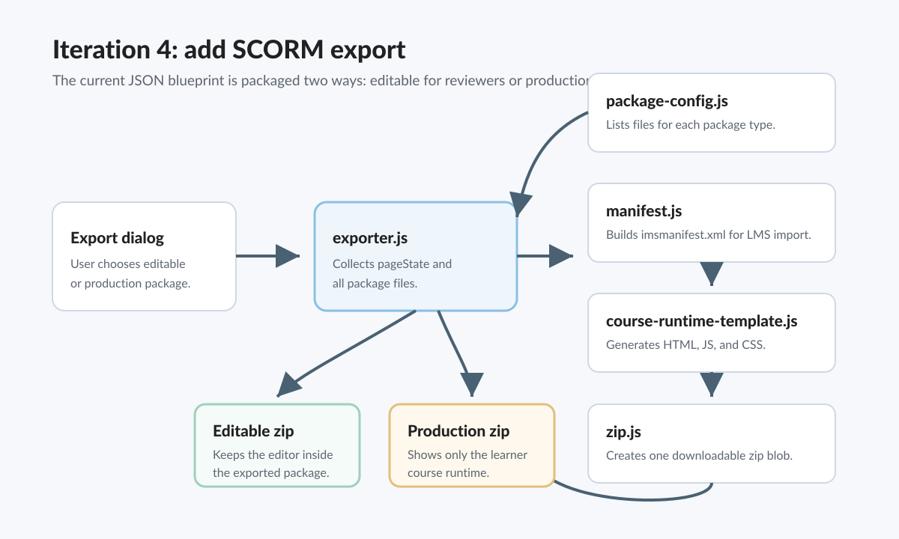
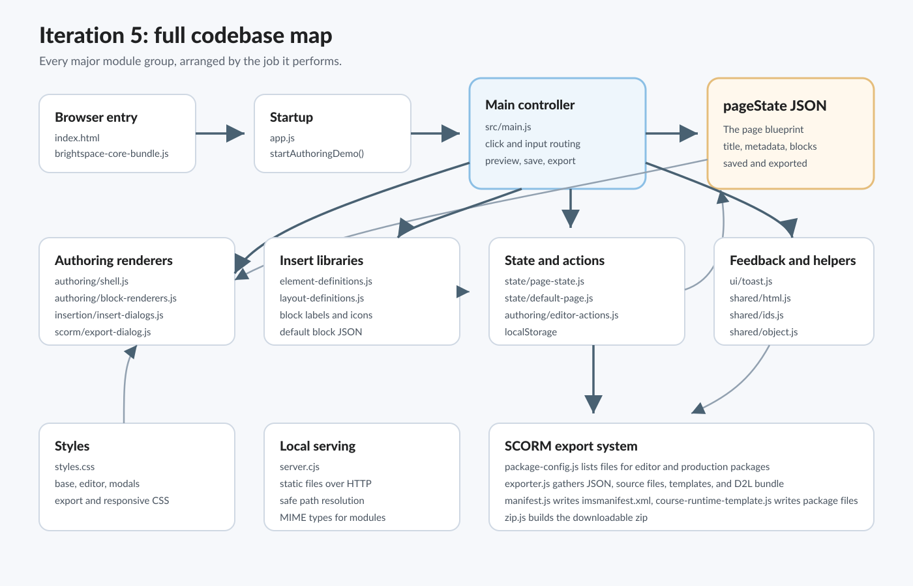

1. Editing content
The user types directly on the canvas. The browser event bubbles up to src/main.js, which asks editor-actions.js to place the new text into the right JSON field. The canvas does not keep its own secret copy of content.
Layman-friendly system tour
Think of the codebase as a small workshop. The editor lets a person arrange learning content, the JSON model is the blueprint, and the SCORM exporter wraps that blueprint into a zip file an LMS can import.
Mind map
The center of the app is not a database or backend. It is one live JavaScript object called pageState. Almost every file either creates it, displays it, changes it, saves it, or exports it.
index.html loads CSS, the D2L bundle, and app.js.
app.js finds #app and starts src/main.js.
state/page-state.js loads a saved draft, an exported package seed, or the default page.
state/default-page.js supplies the first example page.
src/main.js listens for clicks, typing, picker choices, preview, save, and export.
authoring/editor-actions.js updates, reorders, removes, and checks blocks.
insertion/element-definitions.js lists text, headings, images, quizzes, tabs, and more.
insertion/layout-definitions.js lists page layouts and editable regions.
scorm/exporter.js gathers files and starts downloads.
manifest.js, course-runtime-template.js, and zip.js build the package.
shared/html.js escapes user text so generated HTML stays safe.
shared/ids.js, shared/object.js, and ui/toast.js provide small helpers.
styles.css imports modular CSS for the app surfaces.
server.cjs serves the files locally so modules and export reads work over HTTP.
Complete flowchart
This is the main path through the codebase. Read it left to right: each row shows what the user does, which code responds, and what changes inside the page blueprint.
index.html.page.json or a SCORM zip download.index.html loads the D2L web component bundle.styles.css pulls in all app styling.app.js starts the authoring controller.src/main.js loads pageState.shell.js draws the main screen.block-renderers.js draws each block type.insert-dialogs.js and export-dialog.js draw modal content.page-state.js loads and saves drafts.editor-actions.js changes the correct block or nested item.package-config.js says what files belong in each package.exporter.js reads local source files and generated templates.manifest.js writes the LMS manifest.zip.js turns everything into one downloadable zip.Workflows
The user types directly on the canvas. The browser event bubbles up to src/main.js, which asks editor-actions.js to place the new text into the right JSON field. The canvas does not keep its own secret copy of content.
The user chooses an item from a dialog. The selected item is matched to a definition in insertion/. A new JSON block is created with starter text, pushed into pageState.blocks, and rendered on the canvas.
The user chooses editable or production export. The exporter gathers the current JSON, generates package files, includes the D2L bundle, writes a manifest, and asks the browser to download a zip.
Flowchart image series
These SVG images are separate assets in assets/architecture/. They begin with the simplest story and add more of the real codebase at each step.





File guide
This guide avoids heavy implementation jargon. Each row explains the job a file performs in the running app.
| File or folder | Plain-language job | What it passes along |
|---|---|---|
index.html |
The browser doorway for the live editor. | Loads CSS, D2L components, #app, toast, and app.js. |
app.js |
The small starter switch. | Hands the #app element to startAuthoringDemo(). |
src/main.js |
The traffic controller for the editor. | Routes user events to renderers, action helpers, insertion factories, state saving, and exporters. |
src/state/ |
The place that decides which page blueprint to use. | Returns a cloned default page, a saved browser draft, or a package-seeded page. |
src/authoring/shell.js |
The frame around the editor. | Builds toolbar, status strip, canvas, JSON panel, and hidden dialogs. |
src/authoring/block-renderers.js |
The block translator. | Turns JSON blocks into editable HTML and D2L components. |
src/authoring/editor-actions.js |
The changer for existing blocks. | Updates text, input values, quiz feedback, block order, and block deletion. |
src/insertion/element-definitions.js |
The menu of content and interaction blocks. | Creates default JSON for headings, text, images, callouts, tabs, quizzes, checklists, and more. |
src/insertion/layout-definitions.js |
The menu of layout shapes. | Creates layout blocks with regions, spans, roles, and starter content. |
src/insertion/insert-dialogs.js |
The picker windows. | Shows insertable elements and layouts with data attributes that main.js can read. |
src/scorm/export-dialog.js |
The export choice window. | Shows editable package and production package options plus included file lists. |
src/scorm/exporter.js |
The packager coordinator. | Collects JSON, source files, generated files, and the D2L bundle before calling the zip writer. |
src/scorm/course-runtime-template.js |
The package template maker. | Generates production HTML, editable package HTML, runtime JavaScript, and course CSS. |
src/scorm/manifest.js |
The LMS table of contents. | Generates imsmanifest.xml so the LMS knows the entry file and package files. |
src/scorm/zip.js |
The dependency-free zip machine. | Turns named files into one downloadable .zip blob in the browser. |
src/shared/ |
Small reusable safety helpers. | Escapes HTML, creates ids, and clones plain JSON objects. |
src/ui/toast.js |
Small feedback messages. | Shows save, insert, preview, and export status in the D2L toast. |
styles/ |
The visual layout for the app. | Separates base shell, editor canvas, insertion dialogs, export dialog, and responsive rules. |
server.cjs |
The local file server. | Serves modules, CSS, SVG, JSON, and the D2L bundle with correct file types. |
brightspace-core-bundle.js |
The local D2L component library bundle. | Provides custom elements such as D2L buttons, dialogs, tabs, alerts, inputs, and icons. |
Package anatomy
Use this when the exported package should still behave like the authoring tool. It includes the source modules, authoring CSS, current page JSON, and a seeded editor entry page.
app.js, src/, and styles/.assets/data/page.json.index.html.Use this when the page is ready for learners. It removes the authoring interface and ships only a compact runtime that renders the saved JSON.
assets/js/runtime.js and assets/css/course.css.assets/data/page.json at runtime.